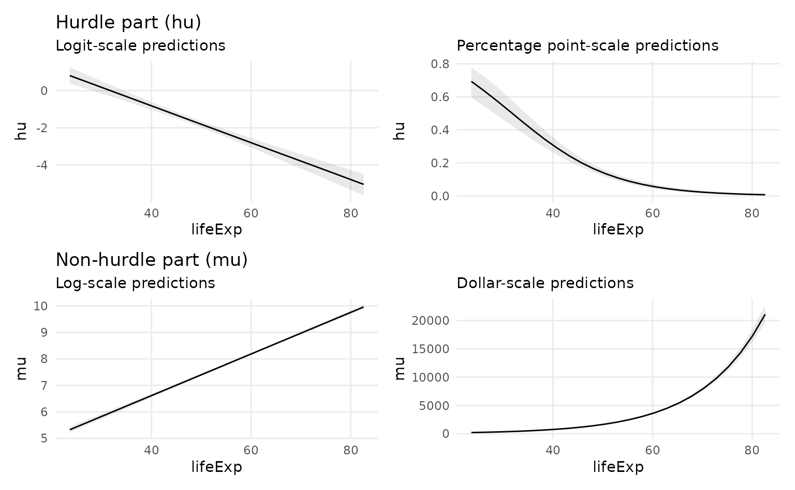

The content of this vignette requires marginaleffects version 0.5.1 which was not yet available on CRAN at the time of writing. You can always install the development version from github.
This vignette explains how to create custom contrasts and slopes, and how to transform predictions, contrasts, and slopes using arbirary functions.
The Contrasts vignette defined contrasts as:
The difference between two adjusted predictions.
This vignette shows how to move beyond such simple differences, by estimating “contrasts” that consist of ratios or arbitrary functions of adjusted predictions. It also shows how to back-transform contrasts to change their scales.
Powerful transformations and custom contrasts are made possible by using three arguments which act at different stages of the computation process:
transform_pretransform_posttransform_avg
Consider the case of a model with a single predictor \(x\). To compute average contrasts, we proceed as follows:
- Compute adjusted predictions for each row of the dataset for the observed values \(x\): \(\hat{y}_x\)
- Compute adjusted predictions for each row of the dataset for the observed values \(x + 1\): \(\hat{y}_{x+1}\)
-
transform_pre: Compute unit-level contrasts by taking the difference between (or some other function of) adjusted predictions: \(\hat{y}_{x+1} - \hat{y}_x\) -
transform_post: Transform the unit-level contrasts or return them as-is. - Compute the average contrast by taking the mean of unit-level contrasts: \(1/N \sum_{i=1}^N \hat{y}_{x+1} - \hat{y}_x\)
-
transform_avg: Transform the average contrast or return them as-is.
The transform_pre argument of the comparisons() function determines how adjusted predictions are combined to create a contrast. By default, we take a simple difference between predictions with hi value of \(x\), and predictions with a lo value of \(x\): function(hi, lo) hi-lo.
The transform_post argument of the comparisons() function applies a custom transformation to the unit-level contrasts.
The transform_avg argument is available in the tidy() and summary() functions. It applies a custom transformation to the average contrast.
The difference between transform_post and transform_avg is that the former is applied before we take the average, and the latter is applied to the average. This seems like a subtle distinction, but it can be important practical implications, since a function of the average is rarely the same as the average of a function:
This vignette shows how to modify steps 3, 4, and 6 to compute custom contrasts: Adjusted Risk Ratios (ARR) and Adjusted Risk Differences (ARD).
Default contrasts: untransformed differences
In R we do:
library(marginaleffects)
library(magrittr)
mod <- glm(vs ~ mpg, data = mtcars, family = binomial)
# construct data
mtcars_plus_1 <- mtcars
mtcars_plus_1$mpg <- mtcars_plus_1$mpg + 1
# adjusted predictions
yhat <- predict(mod, newdata = mtcars, type = "response")
yhat_plus_1 <- predict(mod, newdata = mtcars_plus_1, type = "response")
# unit-level contrasts
con <- yhat_plus_1 - yhat
# average contrasts
mean(con)
#> [1] 0.05680436We can use the comparisons() and summary() functions to obtain the same results:
con <- comparisons(mod)
summary(con)
#> Average contrasts
#> Term Contrast Effect Std. Error z value Pr(>|z|) 2.5 % 97.5 %
#> 1 mpg (x + 1) - x 0.0554 0.008327 6.653 2.8699e-11 0.03908 0.07172
#>
#> Model type: glm
#> Prediction type: responseCustom contrasts with transform_pre: Ratios
Instead of taking simple differences between adjusted predictions, it can sometimes be useful to compute other forms of contrasts. For example, the adjrr function the Stata software package can compute “adjusted risk ratios”, which are ratios of adjusted predictions. To do this in R, we use the transform_pre argument:
comparisons(mod, transform_pre = "ratio") %>% summary()
#> Average contrasts
#> Term Contrast Effect Std. Error z value Pr(>|z|) 2.5 % 97.5 %
#> 1 mpg (x + 1) / x 1.287 0.1328 9.697 < 2.22e-16 1.027 1.548
#>
#> Model type: glm
#> Prediction type: responseThis result is the average adjusted risk ratio, that is, the adjusted predictions when the mpg are incremented by 1, divided by the adjusted predictions when mpg is at its original value.
The transform_pre accepts different values for common types of contrasts: ‘difference’, ‘ratio’, ‘lnratio’, ‘ratioavg’, ‘lnratioavg’, ‘lnoravg’, ‘differenceavg’. These strings are shortcuts for functions that accept two vectors of adjusted predictions and returns a single vector of contrasts. For example, these two commands yield identical results:
comparisons(mod, transform_pre = "ratio") %>% summary()
#> Average contrasts
#> Term Contrast Effect Std. Error z value Pr(>|z|) 2.5 % 97.5 %
#> 1 mpg (x + 1) / x 1.287 0.1328 9.697 < 2.22e-16 1.027 1.548
#>
#> Model type: glm
#> Prediction type: response
comparisons(mod, transform_pre = function(hi, lo) hi / lo) %>% summary()
#> Average contrasts
#> Term Contrast Effect Std. Error z value Pr(>|z|) 2.5 % 97.5 %
#> 1 mpg (x + 1), x 1.287 0.1328 9.697 < 2.22e-16 1.027 1.548
#>
#> Model type: glm
#> Prediction type: response
#> Pre-transformation: function(hi, lo) hi/loThis mechanism is powerful, because it lets users create fully customized contrasts. Here is a non-sensical example:
comparisons(mod, transform_pre = function(hi, lo) sqrt(hi) / log(lo + 10)) %>% summary()
#> Average contrasts
#> Term Contrast Effect Std. Error z value Pr(>|z|) 2.5 % 97.5 %
#> 1 mpg (x + 1), x 0.2641 0.02614 10.1 < 2.22e-16 0.2128 0.3153
#>
#> Model type: glm
#> Prediction type: response
#> Pre-transformation: function(hi, lo) sqrt(hi)/log(lo + 10)(Back-)Transforming results with transform_post: Adjusted Risk Ratios
By default, the standard errors are computed using the delta method on the scale determined by the type argument (e.g., “link” or “response”). Some analysts may prefer to proceed differently. For example, in Stata, the adjrr computes adjusted risk ratios (ARR) in two steps:
- Compute the natural log of the ratio between the mean of adjusted predictions with \(x+1\) and the mean of adjusted predictions with \(x\).
- Exponentiate the estimate and confidence interval bounds.
Step 1 is easy to achieve with the transform_pre argument described above. Step 2 can be achieved with the transform_post argument:
comparisons(
mod,
transform_pre = function(hi, lo) log(mean(hi) / mean(lo)),
transform_post = exp) %>%
summary()
#> Average contrasts
#> Term Contrast Effect Std. Error z value Pr(>|z|) 2.5 % 97.5 %
#> 1 mpg (x + 1), x 1.135 0.02 56.75 < 2.22e-16 1.096 1.174
#>
#> Model type: glm
#> Prediction type: response
#> Pre-transformation: function(hi, lo) log(mean(hi)/mean(lo))
#> Post-transformation: expNote that we can use the lnratioavg shortcut instead of defining the function ourselves.
The order of operations in previous command was:
- Compute the custom unit-level contrasts
- Exponentiate them
- Take the average using the
summary()function
There is a very subtle difference between the procedure above and this code:
comparisons(
mod,
transform_pre = "lnratioavg") %>%
summary(transform_avg = exp)
#> Average contrasts
#> Term Contrast Effect Pr(>|z|) 2.5 % 97.5 %
#> 1 mpg ln(mean(x + 1) / mean(x)) 1.135 2.3808e-10 1.091 1.18
#>
#> Model type: glm
#> Prediction type: response
#> Average-transformation:Since the exp function is now passed to the transform_avg argument of summary() function, the exponentiation is now done only after unit-level contrasts have been averaged. This is what Stata appears to does under the hood, and the results are slightly different.
Back transforming lognormal hurdle models
With hurdle models, we can fit two separate models simultaneously:
- A model that predicts if the outcome is zero or not zero
- If the outcome is not zero, a model that predicts what the value of the outcome is
We can calculate predictions and marginal effects for each of these hurdle model processes, but doing so requires some variable transformation since the stages of these models use different link functions.
The hurdle_lognormal() family in brms uses logistic regression (with a logit link) for the hurdle part of the model and lognormal regression (where the outcome is logged before getting used in the model) for the non-hurdled part. Let’s look at an example of predicting GDP per capita (which is distributed exponentially) using life expectancy. We’ll add some artificial zeros so that we can work with a hurdle stage of the model.
library(dplyr)
library(ggplot2)
library(patchwork)
library(brms)
library(marginaleffects)
library(gapminder)
# Build some 0s into the GDP column
set.seed(1234)
gapminder <- gapminder::gapminder %>%
filter(continent != "Oceania") %>%
# Make a bunch of GDP values 0
mutate(prob_zero = ifelse(lifeExp < 50, 0.3, 0.02),
will_be_zero = rbinom(n(), 1, prob = prob_zero),
gdpPercap0 = ifelse(will_be_zero, 0, gdpPercap)) %>%
select(-prob_zero, -will_be_zero)
mod <- brm(
bf(gdpPercap0 ~ lifeExp,
hu ~ lifeExp),
data = gapminder,
family = hurdle_lognormal(),
chains = 4, cores = 4, seed = 1234)We have two different sets of coefficients here for the two different processes. The hurdle part (hu) uses a logit link, and the non-hurdle part (mu) uses an identity link. However, that’s a slight misnomer—a true identity link would show the coefficients on a non-logged dollar value scale. Because we’re using a lognormal family, GDP per capita is pre-logged, so the “original” identity scale is actually logged dollars.
summary(mod)#> Family: hurdle_lognormal
#> Links: mu = identity; sigma = identity; hu = logit
#> Formula: gdpPercap0 ~ lifeExp
#> hu ~ lifeExp
#> Data: gapminder (Number of observations: 1680)
#> Draws: 4 chains, each with iter = 2000; warmup = 1000; thin = 1;
#> total post-warmup draws = 4000
#>
#> Population-Level Effects:
#> Estimate Est.Error l-95% CI u-95% CI Rhat Bulk_ESS Tail_ESS
#> Intercept 3.47 0.09 3.29 3.65 1.00 4757 3378
#> hu_Intercept 3.16 0.40 2.37 3.96 1.00 2773 2679
#> lifeExp 0.08 0.00 0.08 0.08 1.00 5112 3202
#> hu_lifeExp -0.10 0.01 -0.12 -0.08 1.00 2385 2652
#> ...We can get predictions for the hu part of the model on the link (logit) scale:
predictions(mod, dpar = "hu", type = "link",
newdata = datagrid(lifeExp = seq(40, 80, 20)))
#> rowid type predicted conf.low conf.high lifeExp
#> 1 1 link -0.817487 -1.033982 -0.6043308 40
#> 2 2 link -2.805488 -3.062906 -2.5550801 60
#> 3 3 link -4.790200 -5.337808 -4.2745563 80…or on the response (percentage point) scale:
predictions(mod, dpar = "hu", type = "response",
newdata = datagrid(lifeExp = seq(40, 80, 20)))
#> rowid type predicted conf.low conf.high lifeExp
#> 1 1 response 0.306297360 0.262312829 0.35335351 40
#> 2 2 response 0.057028334 0.044663565 0.07208594 60
#> 3 3 response 0.008242295 0.004783404 0.01372716 80We can also get slopes for the hu part of the model on the link (logit) or response (percentage point) scales:
marginaleffects(mod, dpar = "hu", type = "link",
newdata = datagrid(lifeExp = seq(40, 80, 20)))
#> rowid type term dydx conf.low conf.high lifeExp
#> 1 1 link lifeExp -0.09930925 -0.1157859 -0.08366088 40
#> 2 2 link lifeExp -0.09930925 -0.1157859 -0.08366088 60
#> 3 3 link lifeExp -0.09930925 -0.1157859 -0.08366088 80
marginaleffects(mod, dpar = "hu", type = "response",
newdata = datagrid(lifeExp = seq(40, 80, 20)))
#> rowid type term dydx conf.low conf.high lifeExp
#> 1 1 response lifeExp -0.0210776902 -0.025913450 -0.0165879119 40
#> 2 2 response lifeExp -0.0053208087 -0.006148655 -0.0045608559 60
#> 3 3 response lifeExp -0.0008118892 -0.001154388 -0.0005429417 80Working with the mu part of the model is trickier. Switching between type = "link" and type = "response" doesn’t change anything, since the outcome is pre-logged:
predictions(mod, dpar = "mu", type = "link",
newdata = datagrid(lifeExp = seq(40, 80, 20)))
#> rowid type predicted conf.low conf.high lifeExp
#> 1 1 link 6.612435 6.542113 6.685787 40
#> 2 2 link 8.183520 8.145944 8.220893 60
#> 3 3 link 9.753512 9.687209 9.820665 80
predictions(mod, dpar = "mu", type = "response",
newdata = datagrid(lifeExp = seq(40, 80, 20)))
#> rowid type predicted conf.low conf.high lifeExp
#> 1 1 response 6.612435 6.542113 6.685787 40
#> 2 2 response 8.183520 8.145944 8.220893 60
#> 3 3 response 9.753512 9.687209 9.820665 80For predictions, we need to exponentiate the results to scale them back up to dollar amounts. We can do this by post-processing the results (e.g. with dplyr::mutate(predicted = exp(predicted))), or we can use the transform_post argument in predictions() to pass the results to exp() after getting calculated:
predictions(mod, dpar = "mu",
newdata = datagrid(lifeExp = seq(40, 80, 20)),
transform_post = exp)
#> rowid type predicted conf.low conf.high lifeExp
#> 1 1 response 744.2932 693.7513 800.9406 40
#> 2 2 response 3581.4392 3449.3601 3717.8204 60
#> 3 3 response 17214.5804 16110.2130 18410.2831 80We can pass transform_post = exp to plot_cap() too:
plot_cap(
mod,
dpar = "hu",
type = "link",
condition = "lifeExp") +
labs(y = "hu",
title = "Hurdle part (hu)",
subtitle = "Logit-scale predictions") +
plot_cap(
mod,
dpar = "hu",
type = "response",
condition = "lifeExp") +
labs(y = "hu",
subtitle = "Percentage point-scale predictions") +
plot_cap(
mod,
dpar = "mu",
condition = "lifeExp") +
labs(y = "mu",
title = "Non-hurdle part (mu)",
subtitle = "Log-scale predictions") +
plot_cap(
mod,
dpar = "mu",
transform_post = exp,
condition = "lifeExp") +
labs(y = "mu",
subtitle = "Dollar-scale predictions")
For marginal effects, we need to transform the predictions before calculating the instantaneous slopes. We also can’t use the marginaleffects() function directly—we need to use comparisons() and compute the numerical derivative ourselves (i.e. predict gdpPercap at lifeExp of 40 and 40.001 and calculate the slope between those predictions). We can use the transform_pre argument to pass the pair of predicted values to exp() before calculating the slopes:
# step size of the numerical derivative
eps <- 0.001
comparisons(
mod,
dpar = "mu",
variables = list(lifeExp = eps),
newdata = datagrid(lifeExp = seq(40, 80, 20)),
# rescale the elements of the slope
# (exp(40.001) - exp(40)) / exp(0.001)
transform_pre = function(hi, lo) ((exp(hi) - exp(lo)) / exp(eps)) / eps
)
#> rowid type term contrast comparison conf.low conf.high
#> 1 1 response lifeExp (x + 0.001), x 58.39448 55.84743 61.02206
#> 2 2 response lifeExp (x + 0.001), x 280.89410 266.57621 295.50894
#> 3 3 response lifeExp (x + 0.001), x 1349.40503 1222.58608 1490.38119
#> lifeExp
#> 1 40
#> 2 60
#> 3 80We can visually confirm that these are the instantaneous slopes at each of these levels of life expectancy:
predictions_data <- predictions(
mod,
newdata = datagrid(lifeExp = seq(30, 80, 1)),
dpar = "mu",
transform_post = exp
)
slopes_data <- comparisons(
mod,
dpar = "mu",
variables = list(lifeExp = eps),
newdata = datagrid(lifeExp = seq(40, 80, 20)),
transform_pre = function(hi, lo) ((exp(hi) - exp(lo)) / exp(eps)) / eps
) %>%
left_join(predictions_data, by = "lifeExp") %>%
# Point-slope formula: (y - y1) = m(x - x1)
mutate(intercept = comparison * (-lifeExp) + predicted)
ggplot(predictions_data, aes(x = lifeExp, y = predicted)) +
geom_line(size = 1) +
geom_abline(data = slopes_data, aes(slope = comparison, intercept = intercept),
size = 0.5, color = "red") +
geom_point(data = slopes_data) +
geom_label(data = slopes_data, aes(label = paste0("Slope: ", round(comparison, 1))),
nudge_x = -1, hjust = 1) +
theme_minimal()